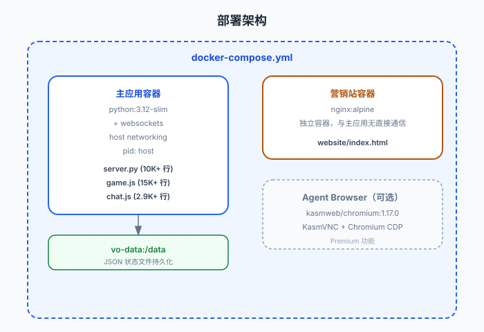
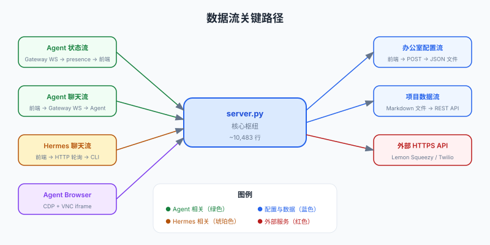

整体架构与依赖关系
从部署架构、模块通信、数据流三个维度分析系统如何运转。理解模块间的依赖关系是读懂这个项目的关键。
前置知识
建议先阅读目录结构与模块职责，了解各模块的位置。
部署架构

图：Docker Compose 编排。主应用容器（Python）+ 可选 Agent Browser 容器（KasmVNC）+ 营销站容器（Nginx）。
主应用容器
python:3.12-slim + websockets，host networking + pid host
数据持久化
Docker Volume
vo-data:/data，所有 JSON 状态文件存储于此
营销站容器
nginx:alpine，独立容器，与主应用无直接通信
模块通信
| 通信路径 | 协议 | 方向 | 用途 |
|---|---|---|---|
| 浏览器 → server.py | HTTP + WebSocket | 双向 | 静态文件 + REST API + Gateway WS 代理 |
| server.py → OpenClaw Gateway | WebSocket | 双向 | 转发聊天消息、接收状态事件 |
| server.py → Hermes CLI | 子进程 | 单向 | CLI 命令执行，读取 stdout/stderr |
| server.py → 外部 HTTPS | HTTPS | 出站 | Lemon Squeezy（激活）、Twilio（短信）、天气 API |
| 前端 JS → server.py API | HTTP (fetch) | 出站 | 所有面板通过 fetch() 调用 /api/* 端点 |
| 前端 JS 之间 | 无直接通信 | — | 全部通过 server.py API 或共享 DOM 事件 |
数据流关键路径

图：五条核心数据流 — Agent 状态、Agent 聊天、Hermes 聊天、办公室配置、项目数据。每条路径都经过 server.py 作为枢纽。
架构模式总结
| 维度 | 模式 |
|---|---|
| 部署模式 | 容器化单体（Docker Compose），可选多容器（Agent Browser） |
| 应用架构 | 前后端不分离（同一个 Python 进程服务静态文件和 API） |
| 前端架构 | Vanilla JS 多文件模块化（非 SPA 框架，但功能类似 SPA） |
| 后端架构 | 单文件巨型 HTTP Handler（非框架式，使用 Python 标准库 http.server） |
| 数据层 | 文件系统 JSON（无关系型/文档数据库） |
| 通信模式 | HTTP REST + WebSocket（双通道） |
为什么选择标准库而非框架？
项目选择 http.server + threading 而非 FastAPI/Flask/ASGI，原因是它需要同时管理 HTTP、WebSocket 代理和 Gateway 监听。标准库足够满足需求且减少了依赖，符合"自托管、轻量"的产品定位。